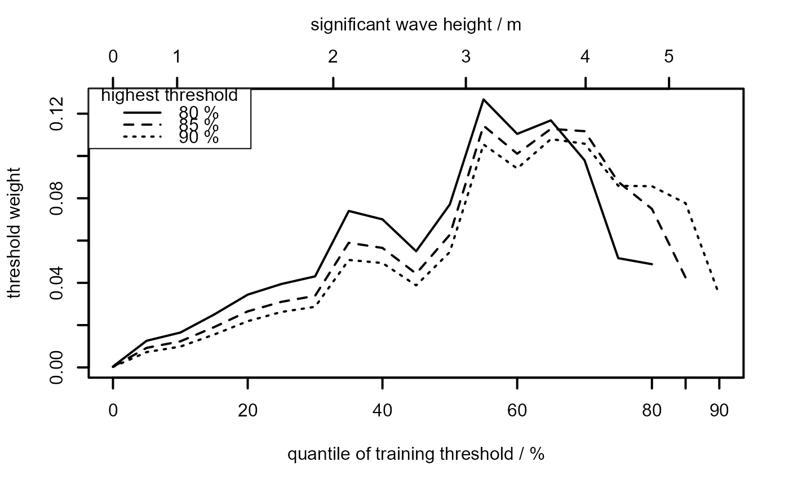
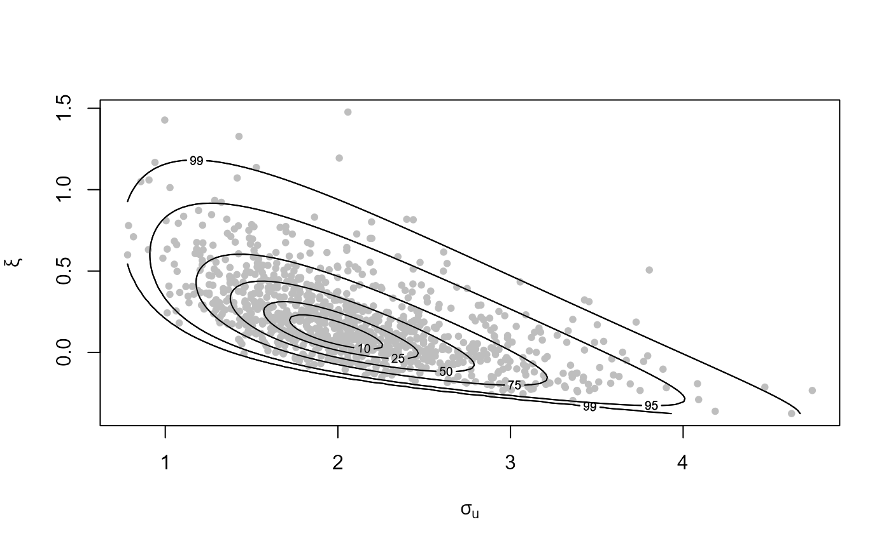
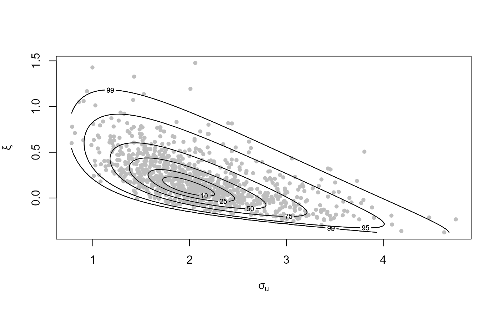

plot method for class "ithresh". Produces an extreme value
threshold diagnostic plot based on an analysis performed by
ithresh. Can also be used to produce a plot of
the posterior sample generated by ithresh for a particular
training threshold.
Usage
# S3 method for class 'ithresh'
plot(
x,
y,
...,
which_v = NULL,
prob = TRUE,
top_scale = TRUE,
add_legend = FALSE,
legend_pos = "topleft",
which_u = NULL
)Arguments
- x
an object of class
"ithresh", a result of a call toithresh.- y
Not used.
- ...
Additional arguments passed on to
matplotand/orlegendand/oraxis. Ifwhich_uis supplied then these arguments are passed toplot.evpost.- which_v
A numeric scalar or vector.
If
which_uis not supplied (a threshold diagnostic plot is required)which_vspecifies the validation thresholds, that is, the components ofx$v_vec, to include in the plot.If
which_uis supplied (a plot of a posterior sample for a given threshold is required) thenwhich_vis a numeric scalar that indicates which element ofobject$v_vecis used in selecting a single threshold (ifwhich_u = "best"). Note: the default,which_v = 1gives the lowest of the validation thresholds inobject$v_vec.- prob
A logical scalar. If
TRUEthen the levels of thresholds are represented by the proportion of observations that lie below a threshold. Ifprob = FALSEthen the values of the thresholds are used.- top_scale
A logical scalar indicating Whether or not to add a scale to the top horizontal axis. If this is added it gives the threshold on the scale not chosen by
prob.- add_legend
A logical scalar indicating whether or not to add a legend to the plot. If
method = "cv"then the legend gives the levels of the validation thresholds.- legend_pos
The position of the legend (if required) specified using the argument
xinlegend.- which_u
Either a character scalar or a numeric scalar. If
which_uis supplied thenplot.evpostis used to produce a plot of the posterior sample generated using a particular training threshold. By default a scatter plot of the posterior sample of Generalized Pareto parameters is produced.If
which_u = "best"then the training threshold achieving the largest measure of predictive performance inobject$pred_perf, based on the validation threshold selected usingwhich_v, is used. Seesummary.ithreshto print the best thresholds for each validation threshold.Otherwise,
which_uis a numeric scalar that selects training thresholdx$u_vec[which_u]. Therefore,which_umust be an integer in1, ..., length(x$u_vec).
Value
If which_u is supplied then the object with which
plot.evpost was called is returned (invisibly).
Otherwise, a list is returned (again invisibly) with two components.
x is a vector containing the coordinates plotted on the
(lower) horizontal axis.
y is an length(u_vec) by n_v matrix of
threshold weights obtained by normalising the columns of the
matrix pred_perf returned by ithresh.
See equation (14) of Northrop et al. (2017).
Details
Produces plots of the threshold weights, defined in
equation (14) of Northrop et al. (2017) against training threshold. A line
is produced for each of the validation thresholds chosen in which_v.
The result is a plot like those in the top row of Figure 7 in
Northrop et al. (2017).
It is possible that a curve on the plot may be incomplete. This indicates
that, for a particular threshold level, a measure of predictive
performance is -Inf. This occurs when an observation in the data
lies above the estimated upper end point of the predictive distribution
produced when this observation is removed.
See also
ithresh for threshold selection in the i.i.d. case
based on leave-one-out cross-validation.
summary.ithresh Summarizing measures of threshold
predictive performance.
print.ithresh Prints the threshold weights.
predict.ithresh for predictive inference for the
largest value observed in N years.
Examples
# [Smoother plots result from making n larger than the default n = 1000.]
# Threshold diagnostic plot
u_vec_gom <- quantile(gom, probs = seq(0, 0.9, by = 0.05))
gom_cv <- ithresh(data = gom, u_vec = u_vec_gom, n_v = 3)
plot(gom_cv, lwd = 2, add_legend = TRUE, legend_pos = "topleft")
mtext("significant wave height / m", side = 3, line = 2.5)

# Plot of Generalized Pareto posterior sample at the best threshold
# (based on the lowest validation threshold)
plot(gom_cv, which_u = "best")
 # See which threshold was used
summary(gom_cv)
#> v v quantile best u best u quantile index of u_vec
#> 1 4.6070 80 3.1598 55 12
#> 2 5.1302 85 3.1598 55 12
#> 3 5.8246 90 3.6545 65 14
# Plot of Generalized Pareto posterior sample at the highest threshold
n_u <- length(u_vec_gom)
plot(gom_cv, which_u = n_u, points_par = list(pch = 20, col = "grey"))

# See which threshold was used
summary(gom_cv)
#> v v quantile best u best u quantile index of u_vec
#> 1 4.6070 80 3.1598 55 12
#> 2 5.1302 85 3.1598 55 12
#> 3 5.8246 90 3.6545 65 14
# Plot of Generalized Pareto posterior sample at the highest threshold
n_u <- length(u_vec_gom)
plot(gom_cv, which_u = n_u, points_par = list(pch = 20, col = "grey"))
